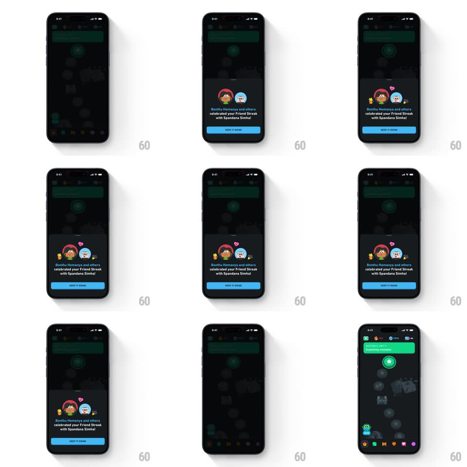

Media
Frame-by-frame

Rebuild this animation 1:1: Duolingo's Friend Streak sheet - a bottom sheet slides up over the dimmed learning path and celebration emojis spring-pop around the two friend avatars.

Rebuild this animation 1:1: Duolingo's Friend Streak sheet - a bottom sheet slides up over the dimmed learning path and celebration emojis spring-pop around the two friend avatars. ## Integration Integration: stack-agnostic spec - springs given as stiffness/damping, timed motions as duration + curve; map every value to your framework and animation library of choice. ## Scene The Duolingo learning path (dark, unit nodes winding down the screen) dims behind a bottom sheet: two circular avatars side by side (a red-haired girl and a blue buddy), the line "Bonthu Hemanya and others celebrated your Friend Streak with Spandana Simha!", and a blue "KEEP IT GOING" button. Floating emojis (waving hand, party popper, pink heart) surround the avatars. ## Motion spec Pattern: bottom-sheet slide-up with spring-scaling celebration emojis. - The path behind dims to 40% (300ms) as the sheet slides up (translateY 100% -> 0, spring ~320/20, ~400ms) with its corner radius relaxing from 24px to 16px. - The two avatars pop in with a shared spring (scale 0.6 -> 1.05 -> 1, spring ~400/14), leaning 4deg toward each other. - The emojis burst next, staggered 80ms apart: each scales from 0 with a big overshoot (spring ~350/10, scale 0 -> 1.3 -> 1) and drifts 6px outward from the avatar pair; the heart floats 8px up and pulses twice (scale 1 -> 1.15, 250ms each). - The headline fades up (10px rise, 250ms), then KEEP IT GOING (150ms later). - Tapping the button (or the dim) slides the sheet back down (300ms ease-in) and the path un-dims (250ms) in the same beat. ## Calibration - The emojis are the celebration - avatars arrive together, emojis burst around them, text waits its turn. - The dim is a true scrim on the path, not a black overlay on the sheet. ## Reduced motion Sheet fades up (250ms); emojis fade in without spring overshoot. ## Don't miss - Both names stay in the single headline line - never truncate to one friend. - The heart is the only emoji that keeps animating after the burst (its double pulse).